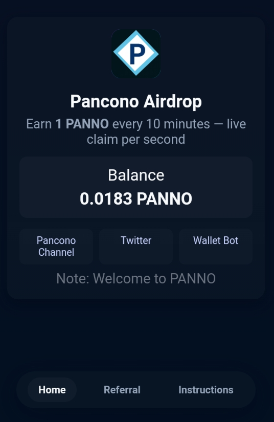

When the App is online and working, users will see a 10 min Claim Pancano session at this same page (as shown in the image below) where you will be able to claim 1 Panno per session.
In the app, private keys will be displayed there. If you find them, immediately copy and import them by clicking the Wallet Bot button below.
📢 The claim session does not always stay live. To know the UTC time when it is live, always check our official Panno Telegram Channel or this page daily — we post the exact UTC time here ⏰.